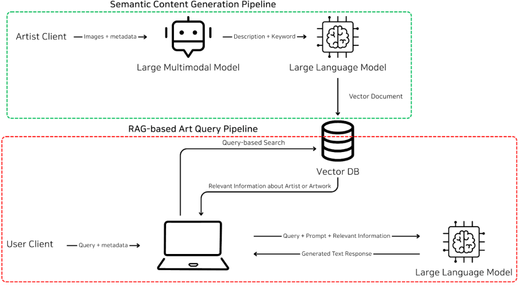
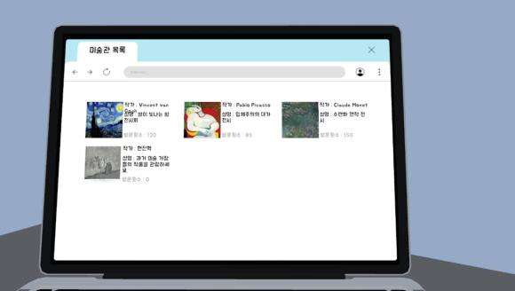

V-ART — VR AI 도슨트— VR AI Docent
VR 환경에서 작동하는 LLM·RAG 기반 AI 도슨트 시스템. 작품 맥락 인지와 자연스러운 대화형 안내 제공.
An LLM/RAG-based AI docent for VR exhibitions, providing context-aware artwork guidance through natural dialogue.
개요Overview
VR 환경에서 사용자가 작품 앞에 섰을 때, AI 도슨트가 해당 작품의 맥락을 이해하고 자연스러운 대화로 안내해주는 시스템. LLM의 일반 지식을 RAG로 보강하여 작품별 정확한 정보를 제공하면서도 사용자의 질문에 유연하게 응답할 수 있도록 설계.
A VR-based AI docent that, when a user faces an artwork, understands the artwork's context and guides the visitor through natural dialogue. Combines an LLM's general knowledge with RAG over artwork-specific data so the system provides accurate per-artwork facts while remaining flexible enough to respond to free-form questions.
동기Motivation
기존 VR 도슨트는 사전 녹음된 대본 재생 수준에 머물러, 사용자 질문이나 시선이 향한 작품에 맞춰 동적으로 안내할 수 없었습니다. LLM을 그대로 붙이면 환각·일반화 오류가 문제가 되고, 통신 latency가 VR 몰입감을 크게 해치는 한계가 있었습니다.
Prior VR docents were essentially scripted audio playback — unable to adapt to user questions or to whichever artwork the user was looking at. Naively bolting an LLM on introduces hallucinations and generic answers, and the round-trip latency badly hurts VR immersion.
접근 방법Approach

- AI 도슨트 코어: LLM + RAG로 작품별 맥락에 기반한 응답 생성
- Semantic Search 기반 검색: 작품 메타데이터·해설 corpus에서 의미 기반 검색
- VR 클라이언트 ↔ AI 서버 분리: latency-aware 아키텍처로 VR 측 응답성 유지
- RAG 파이프라인 최적화: 인덱싱·재정렬·캐싱으로 응답 시간 최소화
- AI docent core: LLM + RAG generating responses grounded in artwork-specific context
- Semantic Search retrieval: Semantic search over artwork metadata and commentary corpora
- VR client / AI server split: A latency-aware architecture that preserves VR responsiveness
- RAG pipeline optimization: Indexing, reranking, and caching to minimize response time

결과Results
- VR 환경에서 작품별 맥락에 맞는 안내가 가능한 AI 도슨트 프로토타입 완성
- Semantic Search 도입으로 LLM 응답 품질 향상
- RAG 파이프라인 최적화를 통해 응답 지연을 약 10배 단축
- Built a working VR AI docent prototype delivering artwork-grounded guidance
- Semantic Search noticeably improved LLM response quality
- Pipeline optimization reduced response latency by ~10×
역할My Role
백엔드 및 AI 파트 담당 (팀장). LLM/RAG 파이프라인 설계, Semantic Search 도입, VR 클라이언트 ↔ AI 서버 통신 구조 설계.
Backend & AI lead (team lead). Designed the LLM/RAG pipeline, introduced semantic search, and structured the VR client ↔ AI server communication.